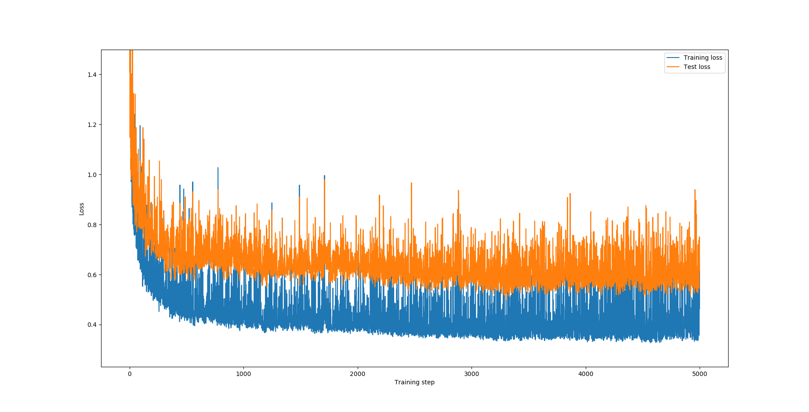
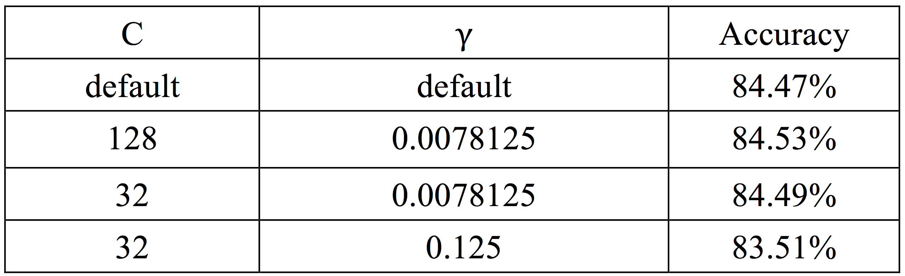

Reading Combinational Circuit and Evaluating Its Outputs
Supervised by Prof. Weikang Qian, Shanghai Jiao Tong University
- The first programming assignment in course Computer-Aided Design of Integrated Circuits. The description file can be founded Here.
- Designed a software tool which can read "bench" format file describing a combinational circuit and implemented a topological sorting algorithm to calculate the values for all the primary outputs of the circuits.
- Code repository can be founded here at Github.com.
Unate Recursive Complement Algorithm
Supervised by Prof. Weikang Qian, Shanghai Jiao Tong University
- The second programming assignment in course Computer-Aided Design of Integrated Circuits. The description file can be founded Here.
- Writed a program that performs the unate recursive complement using the Unate Recursive Paradigm (URP) idea. Given a file representing a Boolean function F as a Positional Cube Notation (PCN) cube list, complement it and return result as a PCN cube list.
- Code repository can be founded here at Github.com.
Image Super-Resolution Using Convolutional Neural Network(CNN)
Supervised by Prof. Haibao Chen, Shanghai Jiao Tong University
- Applied deep learning techniques to sharpen or improve the quality of a low-resolution image input by outputting a super-resolved high-resolution image.
- Proposed three different CNN models and the 7-layers CNN_DEEP got lower loss value and reduced 10% training time, compared with "waifu2x", a open source image super-resolution software.
- Project report can be downloaded here.

Forecasting count of rental bikes for bikeshare systems
Supervised by Prof. Haibao Chen, Shanghai Jiao Tong University
- Forecasted the demand for bikes for bike sharing company in dependency of weather conditions like outside temperature and calendric information e.g. holidays.
- Using machine learning method, trained two or three layers neural network and a deep neural network regressor with Tensorflow to make predictions.
- Code repository can be founded here at Github.com.
- Project report can be downloaded here.

Fig. 1. Training loss and test loss with different training steps
Fig. 2. Prediction and actual data with different dates
Income Prediction via Support Vector Machine(SVM)
Supervised by Prof. Haibao Chen, Shanghai Jiao Tong University
- Employed SVM methods to generate and evaluate income prediction data extracted by Barry Becker from the 1994 Census database.
- Used grid search method to find the optimum parameter C and gamma for SVM, and cross validation is used to reduce computational complexity.
- Achieved high accuracy rate up to 84.53% with our SVM algorithm, using RBF kernel and refined parameters.
- Code repository can be founded here at Github.com.
- Project report can be downloaded here.
Fig. 3. Grid search to find the optimum parameter C and gamma
Table. 3. Prediction accuracy with different C and gamma

"Eye of Providence", an Intelligent Monitoring System
Hackathon SJTU 2017
- Led a group of 4 teammates to build an intelligent classroom monitoring system using face recognition and facial expression detection techniques during "Hackathon SJTU 2017".
- This real time monitoring system can automatically detect sleepy students and record them in database.
- Besides, we used speech identification method to offer several voice control commands.
- Worked as a full-stack developer in this project. Implemented back-end using Python Tornado framework and MySQL database, and front-end using Semantic-UI.
- Code repository can be founded here at Github.com.
Fig. 4. main interface of "Eye of Providence"
“Yorozuya”, a Campus Labor and Information Exchange Platform
Hackathon SJTU 2014
- Designed and implemented a web application for campus users to exchange labor and information during "Hackathon SJTU 2014".
- Customers release tasks on this web app while workers can choose some of them and finish jobs to get payment for labor.
- Worked as a full-stack developer in this project. Implemented back-end using Python Flask framework and MySQL database, and front-end using Bootstrap.
- Code repository can be founded here at Github.com.